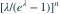

有n个独立零截断泊松观测，参数空间为λ>0，观测全为1。关于λ的极大似然估计，哪项正确？
- AMLE等于1
- BMLE等于n
- CMLE等于0，且0属于题设参数空间
- D在λ>0内没有极大值，似然上确界在λ趋近0时达到极限
我已思考，展开答案与解析
正确答案：D
- 似然正比于

。 - λ>0时每个因子小于1，并随λ趋于0而趋于1；其导数为负。
- 0被参数空间排除，故只有边界上确界，没有内部MLE。
易错提醒“最优极限点”不一定属于参数空间；不能不加说明地写MLE=0。
考后回忆 · 条件重建 · 回忆5；总和等于样本量时的可能设问
依据考试回忆重建；数字、选项和必要条件为补充设定，非原题。